Portia 2.0, the newest version of ScrapingHub's visual web scraping tool, is available for beta testing. It already feels like an improvement on the previous version, but I decided to put it head to head with ParseHub to see how the two tools compare. Here is everything you need to know when deciding which web scraping tool better suits your needs.
How to scrape the web with ParseHub

Choosing data to extract with ParseHub is as easy as clicking on the web page. What is unique about ParseHub, though, is that it can be instructed to do more than just extract data. It has a variety of commands to choose from, making it possible to get data from interactive websites.
Using ParseHub's commands, you can
- sign in to accounts
- select choices from dropdown menus, radio buttons and tabs
- search with a search bar
- travel to a new page simply by clicking on a "next" button.
- get data from infinitely scrolling pages
and more. One ParseHub project can contain multiple different templates, which lets you travel between pages with different layouts to get all of the data that you need.
This is an example ParseHub project. You can see all of the different commands that the user entered, like Select, Hover, and Extract, in the left side bar.

How to scrape the web with Portia
Training a sample in Portia is very similar to training a ParseHub template. Like ParseHub, if you click on the first two items on a page, then the rest will be selected for you. Portia has a much different approach to navigating between web pages, however.
Unlike ParseHub, you don't tell Portia which pages to travel to. Instead, when you run a spider, it will continually search the website that you are on, trying to find pages that are structured the same as the sample you have created. This continues until you either tell it to stop, you reach the limit of your ScrapingHub plan, or the software thinks it has checked every page. This would be useful if you want as much data as possible, without knowing where to find it.
To a ParseHub user who is used to being able to tell their program exactly where to travel, however, this sounds like chaos. And it certainly does lead to unexpected and unwanted data in your results. If you notice that there is a pattern in the URLs of the pages that you want to scrape vs URLs that you don't want to scrape, then Portia lets you use regular expressions to narrow down its search. However, big sites like ebay and Amazon do not have predictable or unique URLs, making it impossible to control your navigation this way.
This is an example of a Portia sample. The links that are highlighted red are ones that do not match the regular expression that the user has entered, and will therefore not be explored by Portia.

As explained earlier, Portia spiders can't work together the same way that ParseHub templates can. When they crawl, they get data only from pages that have the exact same layout. Slight variations in layout can be accounted for using this tutorial), but going between search results and more detailed product description pages is not possible.
Here is a comparison between the ParseHub and Portia features:
| Feature | ParseHub | Portia |
|---|---|---|
| Environment | Desktop app for Mac, Windows and Linux | Web based application |
| Selecting elements | Point-and-click, CSS selectors, XPath | Point-and-click, CSS selectors, XPath |
| Pagination | By clicking on links, entering forms or with URLs | Exclusively by exploration |
| Scraper logic | Variables, loops, conditionals, function calls (via templates) | Selecting and extracting only |
| Drop downs, tabs, radio buttons, hovering | Yes | No |
| Signing in to accounts | Yes | Yes |
| Entering into search boxes | Yes | No |
| Javascript | Yes | Yes, when subscribed to Splash |
| Debugging | Visual debugger and server snapshots | Visual debugger and server snapshots |
| Transforming data | Regex, javascript expressions | Partial annotations |
| Speed | Fast parallel execution | Fast parallel execution |
| Hosting | Hosted on cloud of hundreds of ParseHub servers | Hosted on cloud of ScrapingHub servers if subscribed to Scrapy cloud |
| IP Rotation | Included in paid plans | With Crawlera plan |
| Scheduling runs | With a premium ParseHub account | With a ScrapyCloud plan |
| Support | Free professional support | Community support |
| Data export | CSV, JSON, API | CSV, JSON, XML, API |
Cost
You run your Portia spiders on the same Scrapy Cloud service that ScrapingHub has offered to Scrapy spiders for years. This lets you run your Portia spiders on the ScrapingHub servers and saves your data online. Buying additional Scrapy cloud units makes your crawling faster. Also, the free plan will save your data for only 7 days on the cloud. If you buy one cloud unit, this will increase to 120 days.

Many web scraping projects will not be possible without subscribing to ScrapingHub's other paid services, however. The pricing of their IP rotation service Crawlera and their JavaScript friendly browser Splash below, found from the official ScrapingHub pricing page. If you are happy to run Portia on your own infrastructure without any of these additions, then you can do so: Portia is an open source software like Scrapy.

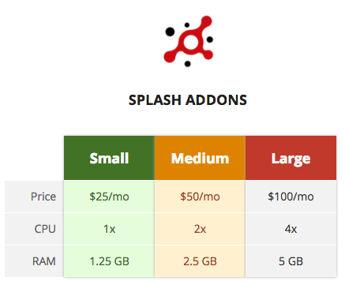
Like ScrapingHub, ParseHub offers more speed for more expensive plans. A ParseHub subscription allows you to run your projects on the ParseHub servers and save on the cloud, accessible from anywhere, just like a subscription to the Scrapy cloud. Like Splash, ParseHub handles JavaScript and blocks ads and, like Crawlera, the premium ParseHub plans have automatic IP rotation. You can see a summary of ParseHub's pricing plans below.
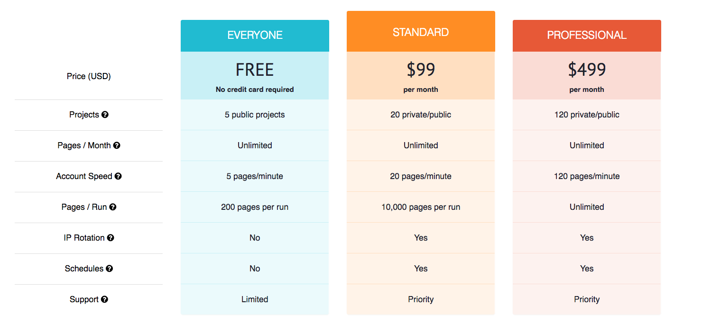
ScrapingHub's incremental plans make it possible for you to customize your plan to suit your personal needs. You might need to do some calculating to find out whether ParseHub's plans are a better deal for you, since it will be different for everyone! Make sure to contact ParseHub for a custom solution if you feel like you need a more customized web scraping plan.
Example project
The clothing website asos.com is having a huge clearance sale, and I want both the sale prices and the regular prices of a variety of items so that I can compare them to my own prices. Let's see how I approached this problem with both web scraping tools!
ParseHub example
This is how the asos home page looks in the ParseHub desktop app.
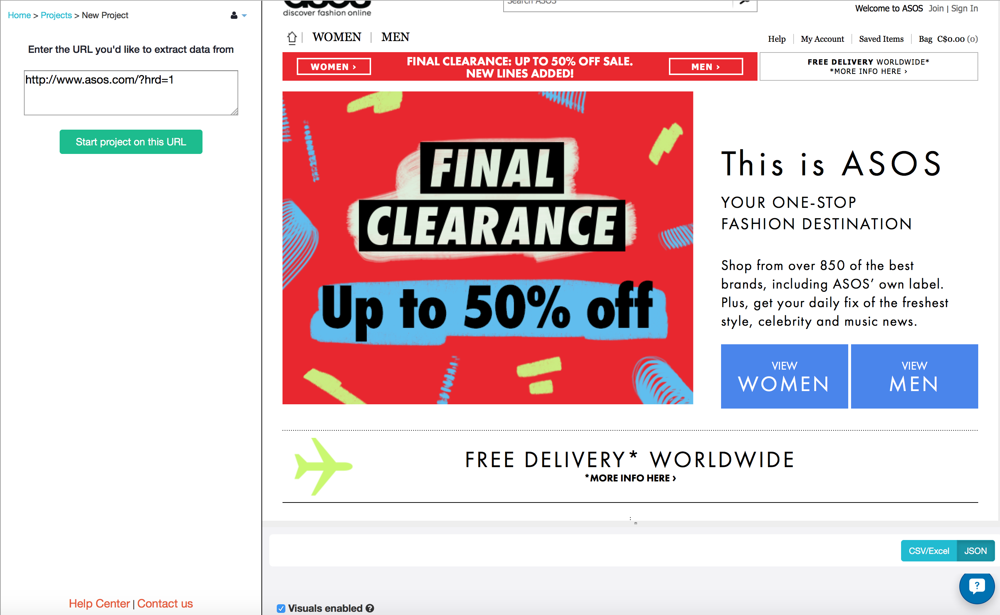
I started a new project and Selected the "view men" and "view women" buttons. I used regular expressions to get rid of the word "view" at the start, so that only "women" and "men" got extracted.
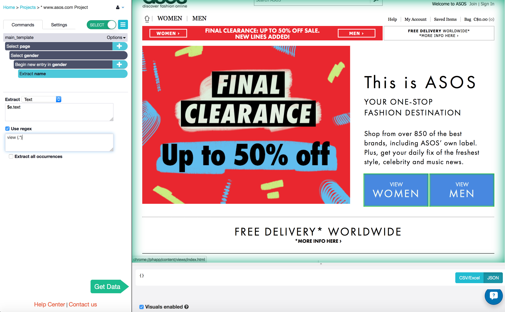
To tell ParseHub to travel to both pages, I simply added a Click command.
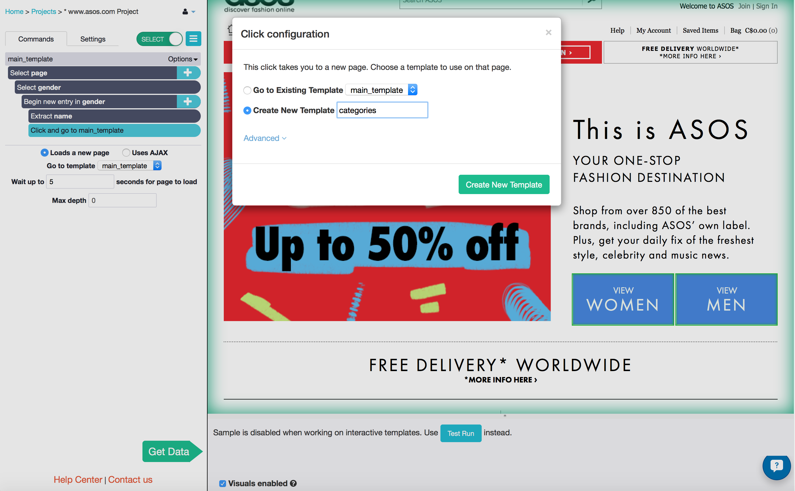
ParseHub loaded a page that listed the women's clothing categories. I clicked on the first two to select all 8, extracted the category name and added another Click command to travel to the sales.
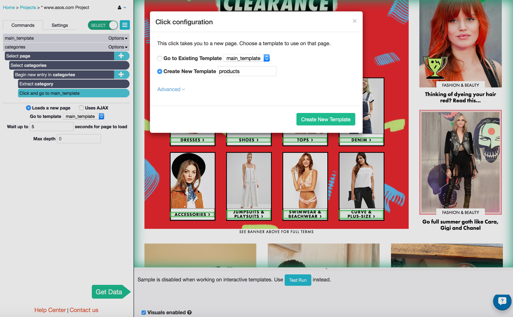
ParseHub loaded the first category for me. I decided that I would only need the first page of results, so I clicked on the "SORT BY" drop down menu and selected "What's new".

I added a Select command and clicked on the names of the first two sale items. The other 34 on the page were automatically selected for me. I added a Relative Select command to select the recommended retail price (RRP) below the name. Clicking on the first one selected all 36.
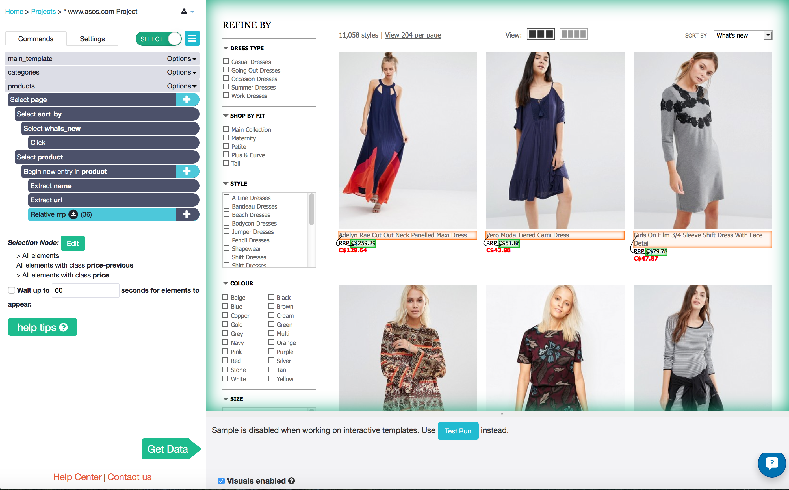
I did the same for the sale price below it. Both the RRP and the sale price started with "C$" to represent Canadian dollars, so I used regular expressions again to extract only the number.
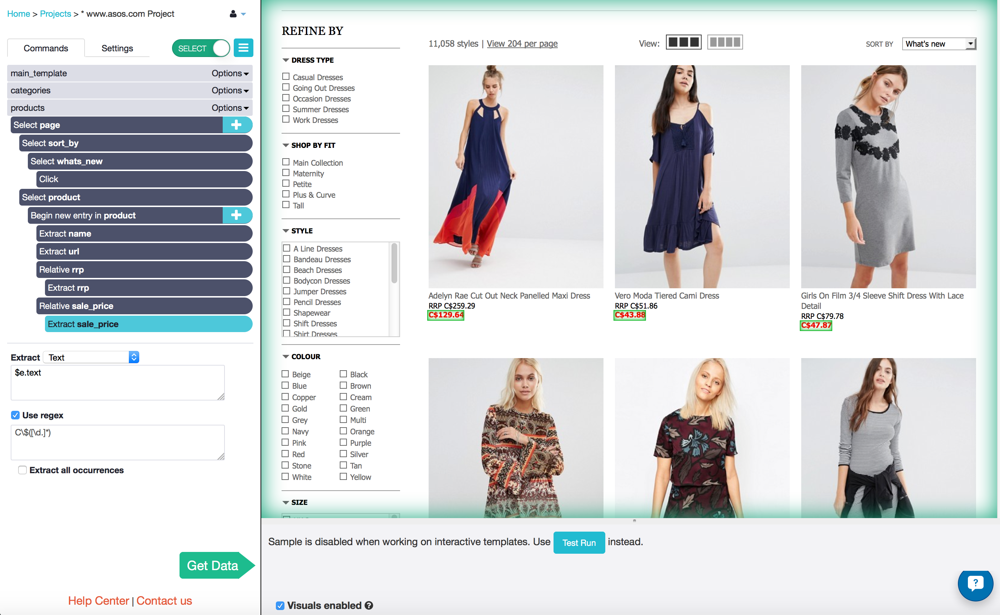
I also decided to extract the image url, just to make product comparison easier. Keep in mind that all of these things will be extracted for each category. For men's clothing, too.
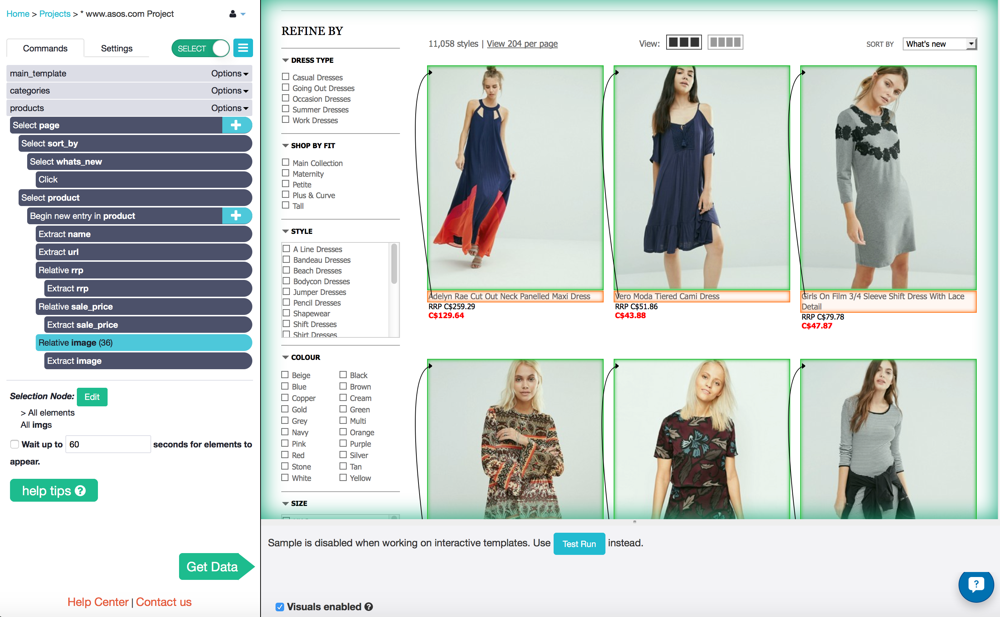
My project was complete and I was ready to get my data. I clicked "Get data" and ran the project once. It returned the information to 577 products, scraped 19 pages and took 3 minutes to complete, on top of the 5-6 minutes that it took me to finish the project.
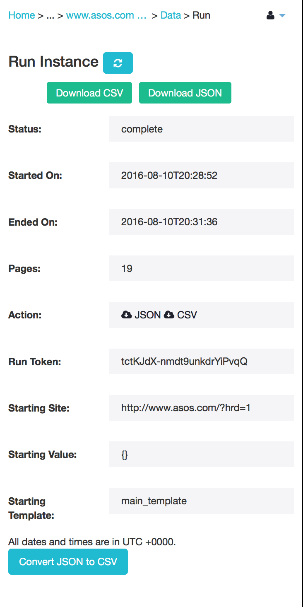
For someone with less experience with ParseHub, that may have taken a few minutes longer, of course. But the website was very easy to scrape and I ran into no problems during this project.
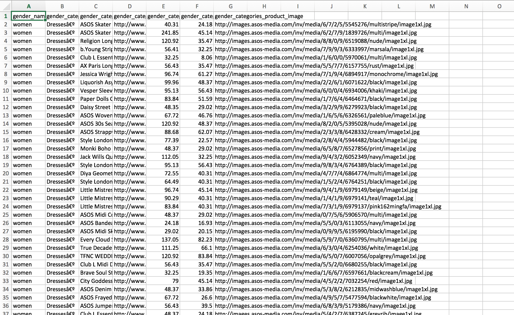
Portia project
I created a new project in Portia and started a spider on the asos home page.
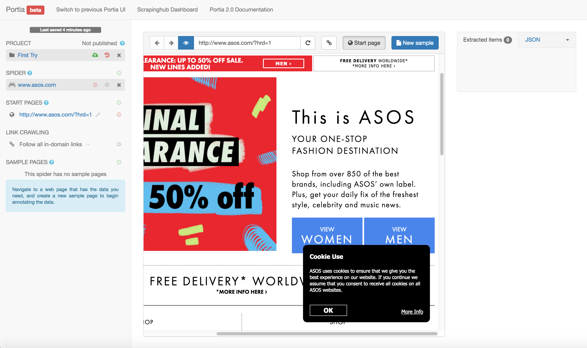
I had to travel to one of the product pages to train Portia with a sample. I clicked on the "view women" button and then selected the first clothing category out of the eight. I clicked on the "New Sample" button to begin annotating on this page.
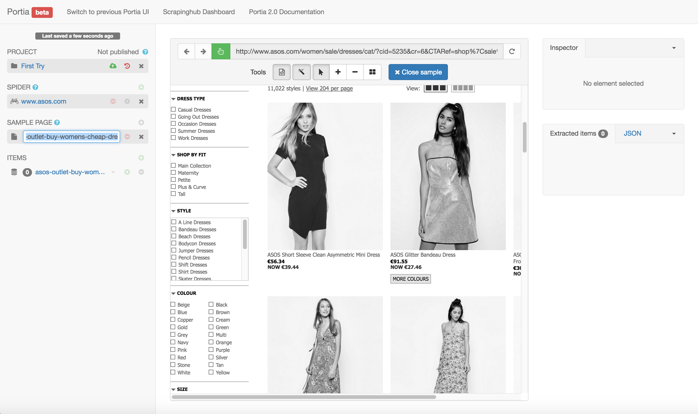
Clicking on the first two names selected all of the products on the page, just like ParseHub. In fact, Portia was able to do all of the things that ParseHub was during this stage in the project: Also just I used a regular expression to strip the euro sign from before each one price, I added multiple fields to extract both the name of the product and the URL.
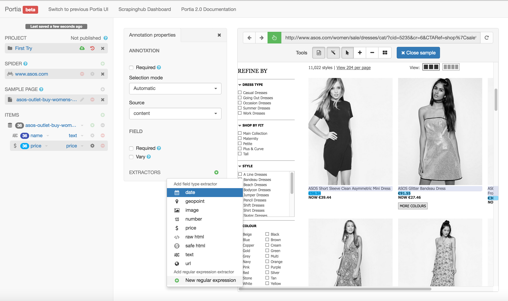
Then I added the sale price and the picture, with a single click each, and closed the sample.
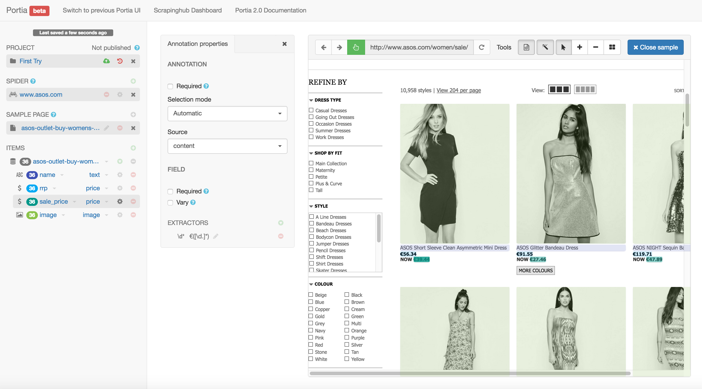
Now I just had to tell Portia which pages I wanted it to extract. Recall that I can't give it instructions to click on the buttons that I want it to click on. But, if I can find a pattern in the URLs, I can write a regular expression that tells it to scrape only those pages that match the pattern.
So I opened a new tab and took a look at the pages that I wanted Portia to go to. In this case, I did notice a pattern: the URLs of the pages that ParseHub scraped all ended with the pattern &sort=freshness. They seemed to be the only pages that ended with that pattern.
So I chose to "Configure url patterns" and told Portia to follow links that followed the pattern .*&sort=freshness
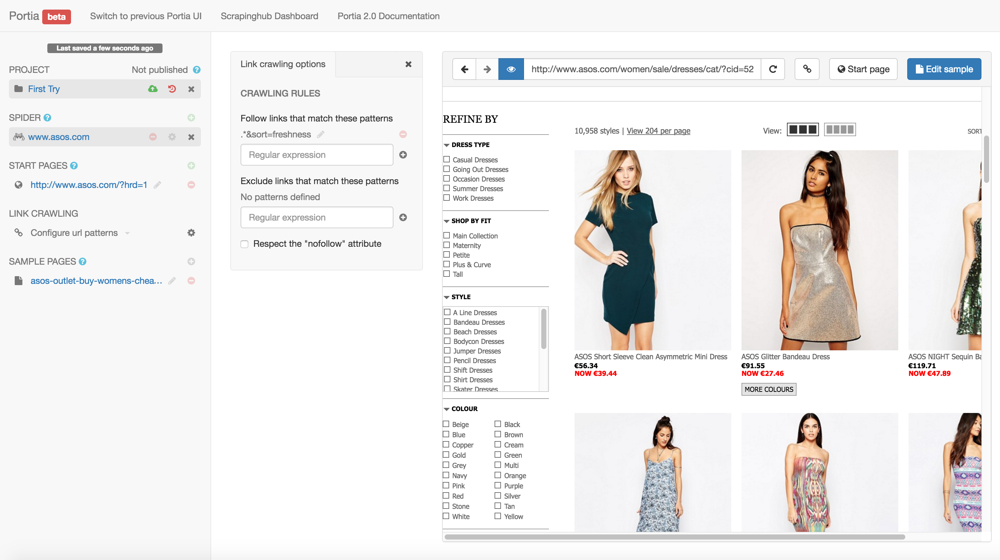
I toggled on link highlighting to make sure that Portia was able to find the pages I wanted it to go to. It didn't seem like the software was able to follow links from the dropdown menu. I ran the spider regardless, to see if Portia could find a way around it.
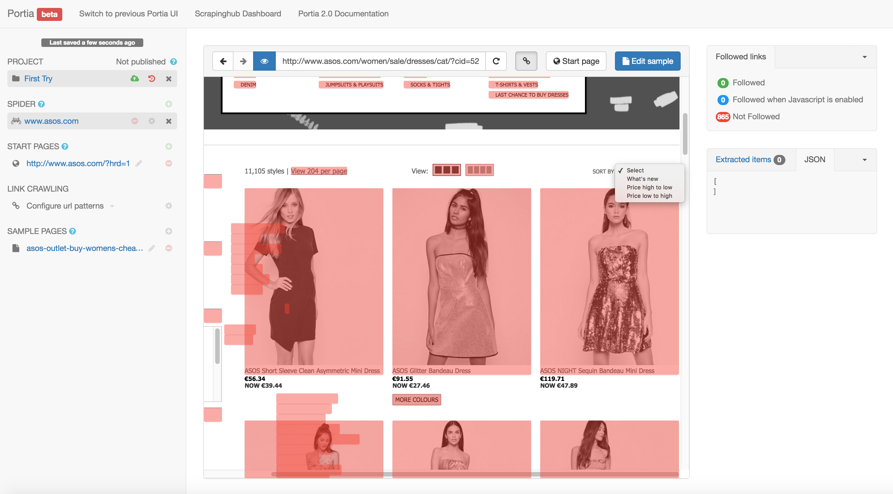
But it didn't. The project completed after Portia couldn't find any links that matched my regular expression, seemingly because it couldn't interact with the dropdown menu. I tried to add extra regular expressions, in an attempt to lead the spider in the direction I wanted it to go, but nothing I tried worked. I got rid of the regular expressions completely and let Portia run wild, on any page that matched my sample.

The spider scraped 10 pages in 6 minutes, 8 of which matched my sample and extracted data. This isn't a bad haul of data, but nowhere near as fast or as effective as the ParseHub run, which scraped 19 pages in less than 3 minutes. Without buying additional cloud units every month, Portia just doesn't seem fast enough.
And remember, I was able to choose exactly which pages I wanted to scrape with ParseHub. With Portia, I had no way of knowing which 10 pages it would get its data from, because I couldn't control the scrape with any regular expressions.
What I noticed during the sample projects
Build speed and stability: ParseHub delivers
Compared to Portia, ParseHub feels much quicker and, most importantly, more stable. ParseHub let me mouse over anything on the page, and the element highlighted without any lagging. Once the element was clicked on, the rest of the elements that I want were selected immediately. I never once had to worry whether or not something was broken.
On the other hand, working with Portia was full of delays, unpredictability, and a never-ending stream of the error messages like the ones that you see below. The program lags every time you mouse over something to highlight it. To select something, it sometimes takes 2 or 3 clicks, and up to 5 or 10 seconds of nervous waiting to see whether or not something broke, or if the program was just struggling to keep up with the clicks.
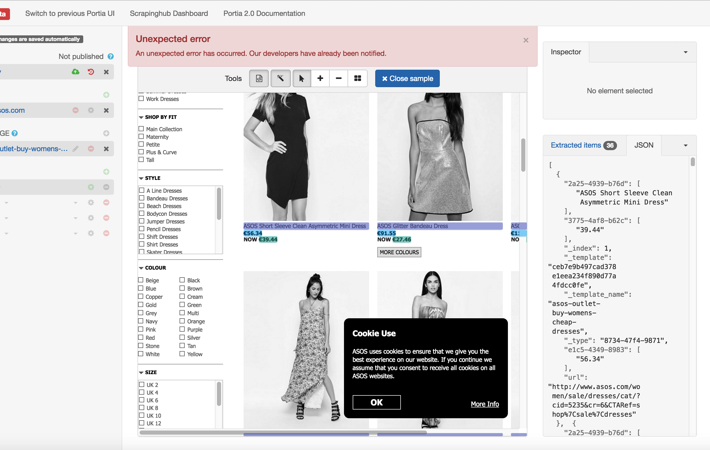
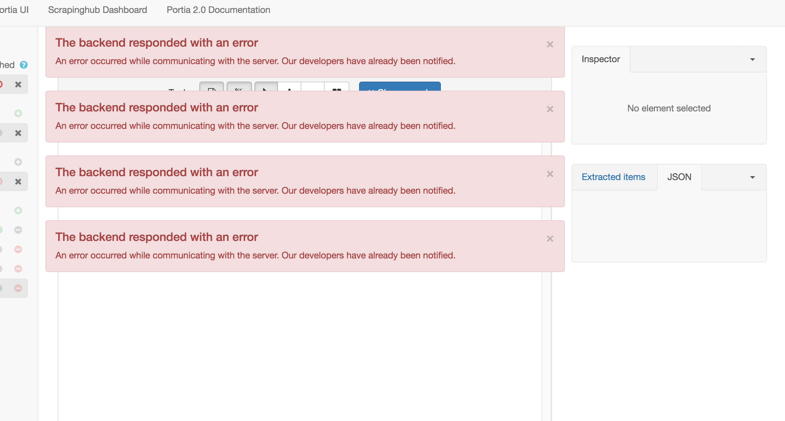
I opened my laptop's Activity Monitor to see if it could tell me the reasons for Portia's delays. When building a ParseHub project, the CPU usage hovered between 6% and 9%.
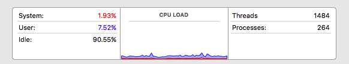
When training a Portia sample, the usage stayed much higher, hovering between 15% to 19%.
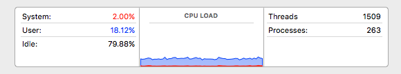
Here you can see the CPU usage start to drop when I close the sample and go to the ScrapingHub dashboard instead.
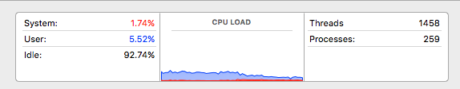
I suspect that since Portia is browser based, it just requires more resources than the desktop based ParseHub, leading to more lagging and more problems. A few times, I found fields that I had deleted spontaneously reappear, as well as fields I had added spontaneously disappeared. You never knew what Portia was going to do next!
Controlled navigation: not possible with Portia
There may be some websites with URL patterns that are easy to find and predict, but big sites like asos don't work like that. Portia was not able to find the pages that I told ParseHub to go to, seemingly because of two reasons: because there was a page in between my starting page and the pages I wanted to scrape, and because they were behind drop down menus that Portia couldn't interact with.
Plus, to find the patterns in the first place required me to open the pages in new tabs, look back and forth between the long URLs searching for a few characters that looked the same. It was an annoying process, and it yielded no results.
Organization: ParseHub has the edge
Because of the uncontrolled extraction of Portia, it makes it impossible to organize the data as a database. I extracted the gender and the category of each item of clothing with ParseHub, giving my results a much better structure. You could select all of the women's shoes with simple SQL queries.
It isn't possible to do this with the data I got from Portia, because you had no way of knowing which page your data came from: the spider just happened to stumble across it, without any indication as to what the items are.
Modifications: You can do so much more with new ParseHub templates
Clicking on the name of each product takes you to a page with additional details. If you want the product code or the description, then you can get ParseHub to click on each link and start scraping with a new template! I added this new template to my project and got the following resuts:
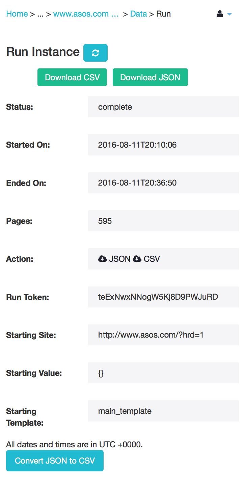
It took longer to get this data because ParseHub had to travel to almost 600 pages. However, because of parallel execution, the job was finished in just under 27 minutes.
Feedback: Let me know what you think!
I want this comparison to be as fair as possible. However, I can't help if my bias for ParseHub may have lead to some unfair criticism of Portia. If you are an experienced Portia user and have noticed something wrong with this review, please let me know in the comments or in a personal email to quentin[at]parsehub[dot]com. This includes: suggesting changes to my spider to make it serve my use case better, features that I missed that give it an edge over ParseHub, Portia tips and tricks, etc. I will be sure to review everyone's feedback and make changes to make this review fair and objective.